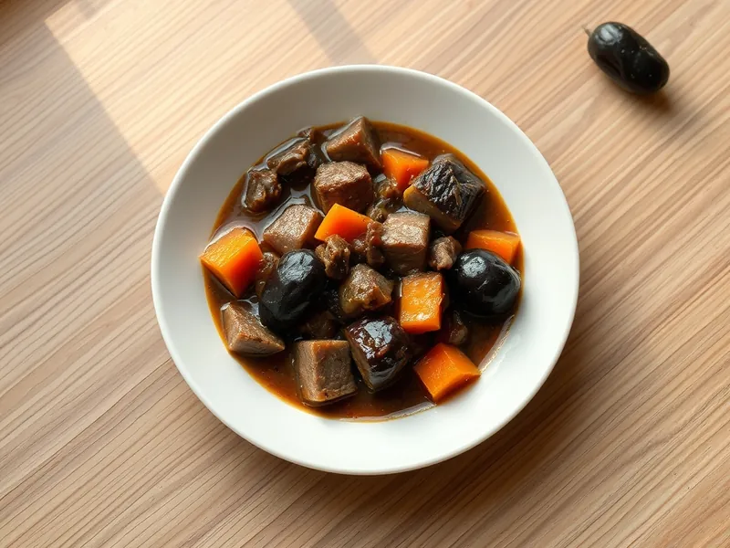

Говядина, тушённая с черносливом
Мягкая говядина в густом соусе с кисло-сладким черносливом
130 мин4 порц.530 ккал на порциюБ 36 · Ж 30 · У 32Русская кухня
Открыть в приложении: порции, таймеры, список покупок
Продукты на 4 порц.
- Говядина700 г
- Чернослив150 г
- Лук репчатый2 шт
- Морковь1 шт
- Томатная паста1 ст. л.
- Мука пшеничная1 ст. л.
- Растительное масло2 ст. л.
- Вода2,5 стак.
- Соль1,5 ч. л.
- Перец чёрный молотый2 щеп.
- Лавровый лист2 шт
Как готовить
- Нарежьте говядину кубиками по 3 см и обсушите полотенцем.
- Обжарьте мясо на масле в казане на сильном огне в 2 приёма по 5 минут до коричневой корочки.
- Добавьте лук полукольцами и тёртую морковь, жарьте на среднем огне 5 минут. Всыпьте муку, добавьте томатную пасту и перемешайте, прогрейте 2 минуты.
- Залейте горячей водой, положите лавровый лист, накройте крышкой и тушите на слабом огне 70 минут.
- Добавьте промытый чернослив, соль и перец, тушите ещё 30 минут, пока мясо не станет мягким, а соус не загустеет.
Совет. Чернослив кладите только в конце: если тушить его с самого начала, он разварится и соус станет приторным.